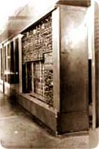
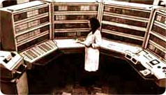

|
Самая производительная отечественная ЭВМ первого поколения (и
последняя машина этого поколения, созданная под руководством Сергея
Алексеевича Лебедева), М-20, появилась в 1958 году и в следующем году
была запущена в производство. Эта машина послужила исходной моделью для ряда ЭВМ второго поколения - БЭСМ-ЗМ, БЭСМ-4, М-220, М-222, причем по структурной организации первые три из указанных ЭВМ мало чем отличались от М-20, а БЭСМ-4 называли даже ее "полупроводниковым вариантом", который отличается от машины М-20 только большей емкостью оперативной и внешней памяти и более широким набором устройств ввода и вывода. Быстродействие БЭСМ-4 было несколько ниже быстродействия машины М-20 (18 000 и 20 000 операций в секунду соответственно), а системы команд у них являлись совместимыми - в том смысле, что любая программа ЭВМ М-20 могла быть "правильно выполнена на машине БЭСМ-4". (Для сравнения, первая машина семейства БЭСМ, работа над которой закончилась в 1952 году, имела среднюю производительность около 10 000 операций в секунду, при этом она являлась тогда самой быстродействующей ЭВМ в Европе.) Краткая характеристика М-20
В машине использовалось 4500 электронных ламп и 35 000 полупроводниковых диодов. |
|
В 1950 году в Институте точной механики и вычислительной техники под
руководством С.А.Лебедева была спроектирована машина
БЭСМ (Большая Электронная Счетная Машина), а
в 1952 году началась ее опытная эксплуатация. В проекте в начале предполагалось применять память на трубках Вильямса, но в 1955 году в качестве элементов памяти в ней использовались ртутные линии задержки. По тем временам БЭСМ была весьма производительной машиной - 8000 оп/сек. Она имела трехадресную систему команд, а для упрощения программирования широко применялся метод стандартных программ, который в дальнейшем положил начало модульному программированию, пакетам прикладных программ. Серийно машина стала выпускаться в 1956 году под названием БЭСМ-2. |
 БЭСМ |
|
 БЭСМ-6 |
Создание высокопроизводительной и оригинальной по архитектуре вычислительной системы БЭСМ-6 имело большое влияние на развитие вычислительной техники. В ЭВМ БЭСМ-6 использовались 60 тыс. транзисторов и 200 тыс. полупроводниковых диодов, причем высокая надежность машины была обеспечена большим запасом мощности основных схем – диоды и транзисторы были нагружены на 25-40% от допустимого предела. Имея исключительно высокое быстродействие – 1 млн. оп/с, БЭСМ-6 обладала отличным коэффициентом отношения производительности к стоимости вычислений. |
|
Разработка БЭСМ-6 была осуществлена под руководством С.А.Лебедева и
В.А.Мельникова в ИТМ и ВТ. Серийный выпуск начат в 1967 году.
Машина БЭСМ-6 обладала рядом интересных особенностей, по организации виртуальной памяти по принятому в ее структурной организации принципу "трубопровода", по организации связи с каналами и периферийными устройствами. Но отдельные научно-технические прорывы не могли существенно улучшить качество жизни в СССР. |